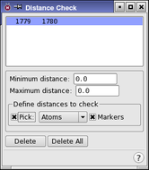

| Using | Features | Links |
This panel is used to reject conformational search results when the distance between specified atom pairs is larger or smaller than desired.
To open this panel, choose Distance Check from the Search variables option menu in the CSearch tab of the Conformational Search panel and click Edit.
Occasionally, it is desirable to restrict the scope of a conformational search to generate only structures that are consistent with certain specified geometric constraints. This might be the case when experimentally obtained results such as NOE constraints are available. Distance checks are used to reject structures in which certain distances do not meet the specified criteria.
Distance checks cannot be set using the automatic setup process. They must be added by picking atoms from the structure in the Workspace.
To define a distance for checking, choose either Atom or Bond from the Pick menu, then pick two atoms or one bond in the Workspace. A new entry is added to the list at the top of the panel. Maestro marks the defined distance check with a purple dotted line and a “check” icon. The selected distance check is distinguished by two solid lines on either side of the dotted line.
For each pair of atoms that you select, you must define the minimum and maximum distances in the Minimum distance and Maximum distance text boxes. Structures with distances that lie outside this range are rejected.

This list shows the sets of two atoms that define the distance checks to use in the calculations. You can select a line in the list to display or delete, or to redefine by picking different atoms.
If you clicked Perform Automatic Setup in the Conformational Search panel, this list contains the results of the setup when you open the panel.
The minimum acceptable distance between the two atoms is specified in this text box. If the distance between the distance check atoms is less than this minimum distance, the structure is rejected..
The maximum acceptable distance between the two atoms is specified in this text box. If the distance between the distance check atoms is greater than this maximum distance, the structure is rejected..
To define a distance check, pick two atoms with the standard picking controls in this section. As the first atom is picked, a purple box is placed around it. Once the second atom is picked, a new entry is displayed in the list.
A distance check can be redefined by picking new atoms while it is selected in the list.
If this option is selected, the selected atoms are marked with a purple broken line. To distinguish the currently selected distance check, a solid line is placed on either side of the broken one.
To delete a defined distance check, select it by clicking on it in the list, or re-pick the atoms that define it, then click Delete.
To delete all the defined distance checks, click this button.